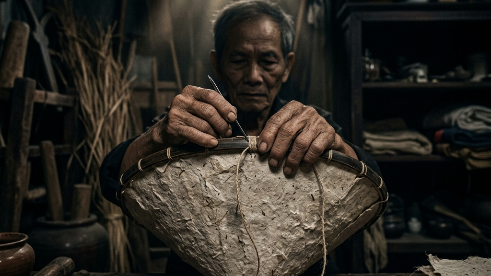
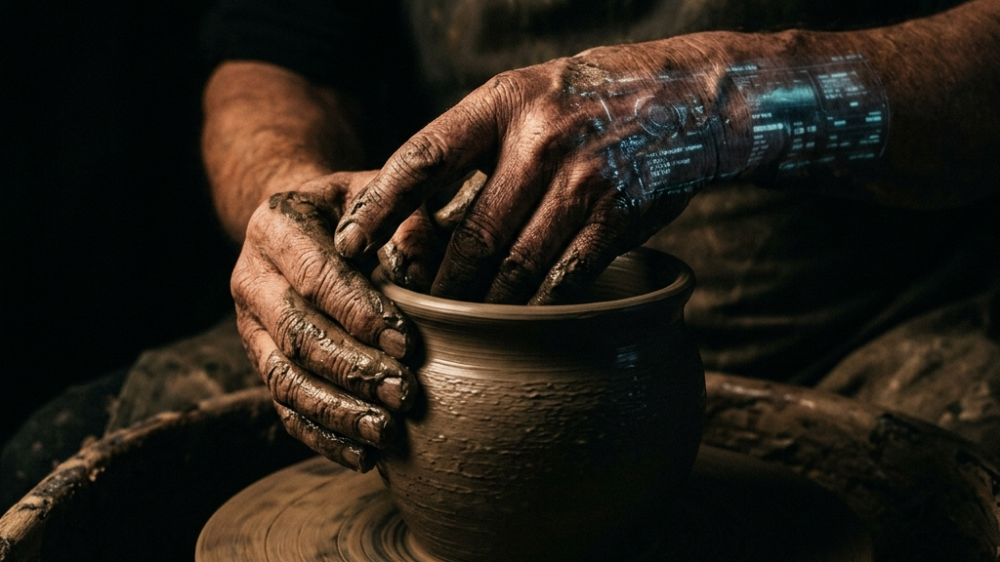
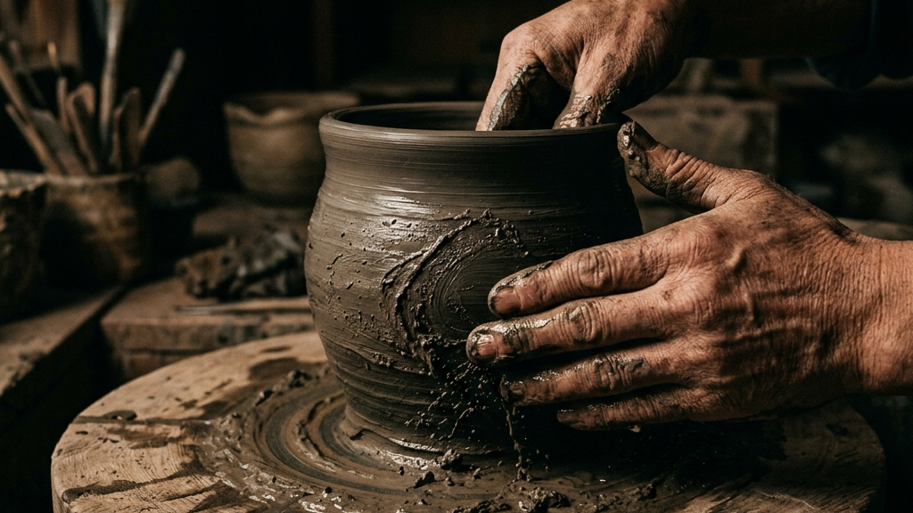
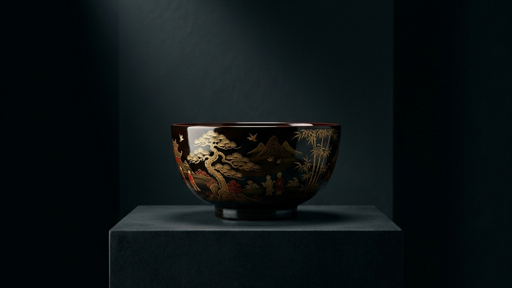

ベトナムの首都ハノイには、1,300を超える工芸村が存在し、そのうち300以上が公式な「伝統工芸村」として認定されています。一見すると圧倒的な歴史の蓄積を誇るこの巨大なエコシステムは今、国際経済への統合と市場競争の激化という荒波の中で、かつてない生存の危機に瀕しています。本稿では、物理的な村落の境界線を越え、電子商取引（EC）やデジタルメディアを活用することで伝統的価値を次世代へと遺そうとする「ハノイ工芸村のデジタル変革（DX）」の最前線を紐解き、非効率な手仕事を守るためにこそテクノロジーが必要であるという、逆説的な美学のロードマップを提示します。
【本稿で紐解く3つの核心】
私たちが想像する「伝統工芸」の風景は、静かな工房で職人が一人、黙々と素材に向き合う姿かもしれません。しかし、その静寂の裏側では常に、市場への適応と技術の継承という生々しい血みどろの闘いが繰り広げられてきました。日本の伝統工芸産業はなぜ年平均9.76%で拡大するのかという問いに対する答えが、単なる技術の保存ではなく市場のグローバル化にあったように、ハノイの工芸村もまた、生き残るための明確な闘いに足を踏み入れています。

デジタル変革（DX）という言葉は、しばしば「効率化」や「大量生産」といった文脈で語られがちです。しかし、伝統工芸におけるDXの起点は全く異なります。それは、物理的な村落に縛り付けられていた「手仕事の熱量」を、デジタルの海を通じて世界中の求める人々の元へ直接届けるための、全く新しい流通回路の構築なのです。
首都ハノイの近郊に広がる1,300以上もの工芸村。これらは単なる生産拠点ではなく、数百年、あるいは千年以上にわたって技術と文化、そして地域コミュニティのアイデンティティそのものを担ってきた歴史の集積地です。陶磁器のバッチャン村や、絹織物のヴァンフック村など、その名前は国際的にも知られています。しかし、こうした圧倒的なリソースを持ちながらも、彼らの多くは「物理的な距離」と「情報伝達の限界」という壁に衝突しています。
国際経済統合が急速に進む中、安価な大量生産品が市場に溢れ、消費者の品質やデザインに対する要求はかつてないほど高まっています。伝統的な卸売ネットワークや、村を訪れる観光客への対面販売だけに依存するビジネスモデルは、すでに限界を迎えていました。職人たちがどれほどの執念で完璧な美を追求しようとも、それが市場に認知されず、適切な対価として還元されなければ、産業としての命脈は絶たれてしまいます。「良いものを作れば売れる」という職人の純粋な矜持は、グローバル化という無慈悲な構造変化の前では、あまりにも脆弱な盾に過ぎなかったのです。
「情報が届かない場所では、いかなる至高の技術も『存在しない』ことと同義である」
— 伝統産業が直面する市場の真理
この残酷な真理に直面したハノイの工芸村は、生き残るために「情報」と「流通」の再構築を迫られました。そこで彼らが選択したのが、電子商取引（EC）プラットフォームの活用と、デジタルメディアを通じた能動的な情報発信です。物理的な店舗や仲介業者を介さず、作り手と世界中の消費者をダイレクトに接続する。このデジタルシフトこそが、彼らにとっての「生存のためのDX」の号砲となりました。
Drivers of Transformation
デジタル変革は、単に販路をインターネット上に移すことだけを意味しません。それは、職人たちが自分たちの技術の真の価値（コンテキスト）を取り戻す闘いでもあります。ECプラットフォームを活用することで、職人は自らの手で価格を設定し、製品の背後にあるストーリーを直接消費者に語りかけることができます。
数ヶ月という途方もない時間をかけて作られる工芸品が、なぜその価格になるのか。そこにはどのような失敗と、こなくそーと何度もやり直した泥臭い執念が隠されているのか。デジタルメディアを通じてこれらの「背景（コンテキスト）」を可視化することは、消費者に単なる「モノ」ではなく「体験と時間」を販売することに他なりません。デジタル化の真の価値は、非効率な手仕事が持つ熱量を、一切希釈することなく世界へ届けることにあるのです。
こうした「情報が届かない」という致命的な物理的制約を打破するため、現在ハノイではかつてない規模でのデジタル変革が進行しています。特に注目すべきは、1,300の村落の中でも厳しい基準をクリアした「300以上の認定伝統工芸村」をモデルケースとした、組織的なDX支援の動きです。「工芸は越境する」伝統工芸の海外展開とアート化の現在地でも言及したように、今や工芸品は一地域の特産物にとどまらず、国境を越えたアートピースとしての価値を持ち始めています。ハノイの工芸村もまた、このグローバルな潮流に乗るための情報インフラを急速に整備しているのです。
ハノイ市によって正式に認定された300の伝統工芸村は、単なる文化遺産の保存にとどまらず、地域経済を力強く牽引する実質的なエンジンとしての役割を担っています。彼らは、先人たちから受け継いだ高度な技術を保持しながらも、現代の市場ニーズに合わせて製品をアップデートする柔軟性を持ち合わせています。しかし、どれほど優れた製品を開発しても、それを適切なターゲット層に届けるマーケティング手法を持たなければ、宝の持ち腐れとなってしまいます。
そこで、これらの認定村落ではいち早くECプラットフォームの導入や、デジタルツールを活用した生産管理の効率化が進められています。例えば、SNSを活用して工房の日常や製作過程をリアルタイムで発信し、国内外のバイヤーや消費者と直接コミュニケーションを取る試みが日常化しつつあります。物理的なショールームを持たなくとも、スマートフォン一台あれば、世界中のあらゆる場所に自らの美学を発信できる。この「非対称な戦い方」こそが、リソースに限りのある伝統工芸村がグローバル市場で生き残るための強力な武器となっているのです。
村内の通信環境の整備と、職人たちへの基本的なデジタルトレーニングの実施。
ECサイトの構築と、SNSを通じた「プロセス」の可視化によるファン獲得。
職人個人の努力だけでなく、それをマクロな視点から支える組織的なエコシステムも不可欠です。2026年5月17日、ハノイ報道放送局は「デジタル時代の首都の伝統工芸村」をテーマにした大々的な特集番組を放送しました。この番組には、農業環境省や新農村開発調整中央事務所といった政府機関の要人も出演し、工芸村の持続可能な発展に向けた白熱した議論が交わされました。
単なるドキュメンタリーではなく、政府とメディアが一体となって「伝統工芸のDX」というアジェンダを国家レベルで推進している事実。これは、伝統工芸がもはや「守るべき過去の遺物」ではなく、「未来の経済を切り拓く最重要コンテンツ」として再定義されたことを意味しています。行政によるデジタル化への補助金支援や、メディアによる大々的な認知拡大といった強固なバックアップは、職人たちが新しい挑戦へと踏み出すための心理的、そして物理的な防波堤として機能しているのです。

伝統工芸の真の価値は、完成した美しさだけにあるのではありません。むしろ、そこに至るまでの「過程」にこそ宿っています。泥臭く、非効率で、何度もやり直す執念。その「見えない時間」こそが、最終的な作品に他者を圧倒するほどのオーラを与えます。伝統工芸のエコシステムと藍染めにおいても、完成品の色合い以上に、発酵を待ち、温度を管理する日々の「摩擦」が本質的な価値として語られていました。しかし、これまでの販売形態では、消費者がその「見えない価値」に触れる機会はほとんどありませんでした。
デジタルマーケティングの最大の功績は、この「見えない時間（プロセス）」を可視化し、一つの強力なコンテンツへと昇華させたことです。職人のシワが刻まれた手、失敗して積み上げられた破片、あるいは思い通りにならない自然素材との格闘。これらすべてをSNSや動画プラットフォームを通じてリアルタイムで発信することで、消費者はただの完成品を買うのではなく、職人の「物語」と「生きた時間」を共有する共犯者となります。
「私たちはモノを売っているのではない。100年の歴史が凝縮された『沈黙の時間』を届けているのだ」
— あるハノイの木彫り職人の言葉
この「プロセスの可視化」は、単なるPR戦略を超えた意味を持ちます。それは、効率ばかりが重視される現代において、「あえて非効率な手仕事を選ぶことの崇高さ」を証明する行為なのです。非観光型・小規模文化財の活用モデルに見られるように、わかりやすいエンターテイメント性がなくても、その場所に流れる静謐な時間や職人の息遣いそのものが、高い解像度を持つ現代の消費者には「究極のラグジュアリー」として強烈に突き刺さります。
| 価値の源泉 | 従来の伝達手段（物理的） | デジタル時代の伝達手段（コンテキスト） |
|---|---|---|
| 職人の技術 | 完成品の展示、対面での口頭説明 | 製作プロセスの動画配信、手元のクローズアップ |
| 素材の背景 | パンフレット、産地証明書 | 気候や土壌との格闘、自然の理不尽さの可視化 |
| 失敗と葛藤 | 語られない（完成品のみが評価される） | 「こなくそー」とやり直す泥臭い執念の共有 |
私たちがスマートフォンを開けば、たった1秒で欲しい情報が手に入り、明日には商品が届く時代。このタイパ至上主義の中で、多くの人々は「待つこと」を極端に恐れ、すぐに結果が出ないものに対して不安を抱いています。しかし、伝統工芸の世界において、時間は敵ではありません。むしろ、数ヶ月かけて漆が乾くのを待ち、土が焼き締まるのを待つという「思い通りにならない時間」こそが、真の美を醸成する最大の味方なのです。
デジタルマーケティングは、この「待つことの豊かさ」を現代の消費者に再教育するツールとして機能します。「なぜこれほど時間がかかるのか」「なぜこの価格になるのか」。その背景にある圧倒的な非効率の連続を、包み隠さずデジタル空間で開示すること。それは「待てない」現代の病に対する、静かで力強いカウンターパンチとなるのです。

ECサイトでの販売やSNSでの発信が一般化するにつれ、一つの巨大なジレンマが浮上してきます。それは「デジタル化による効率の追求が、伝統工芸の本質である美意識（非効率な手仕事）を破壊してしまうのではないか」という恐れです。市場の需要に応えるために生産スピードを上げ、データを分析して売れ筋のデザインだけに特化していく。これは一般的なビジネスとしては大正解ですが、工芸の世界にこの論理をそのまま持ち込むと、数百年かけて築き上げられたアイデンティティは瞬く間に均質化し、陳腐化してしまいます。
ハノイの認定工芸村が示しているのは、単にテクノロジーを盲信するのではなく、それを「自らの美学を守るための防波堤」として意図的に使いこなすという高度なロードマップです。彼らは、デジタル技術を「生産工程をショートカットする」ためには決して使いません。漆を塗る回数を減らしたり、自然乾燥を人工乾燥に置き換えたりすることは、工芸品の魂を削る行為だと理解しているからです。
彼らがDXを導入するのは、あくまで「職人の手が触れない領域」、すなわち在庫管理、顧客データの蓄積、グローバルな配送ロジックの構築、そして翻訳を介した海外バイヤーとの交渉プロセスです。これらの一見退屈で、しかし膨大な時間を奪っていた間接業務をテクノロジーに一任することで、職人は本来最も時間をかけるべき「理不尽な自然素材との対話」に再び100%没入することができるようになります。つまり、DXの究極の目的は、スピードを上げることではなく、逆に「どれだけ時間をかけても良い環境（余白）」を作り出すことにあるのです。
美意識を保ったまま競争力を高めるという離れ業は、職人たちの精神論だけで達成できるものではありません。実用品から1,000年先の遺産へと昇華する歴史的転換点でも触れたように、伝統工芸が生き残るためには、時代ごとの環境変化（今回の場合はデジタルトランスフォーメーション）にパラサイトし、自らをアップデートし続ける「適者生存の法則」を体現する必要があります。
例えば、VR（仮想現実）を用いて工房の雰囲気を世界中に体験させたり、ブロックチェーン技術を用いて工芸品の真贋証明や原材料のトレーサビリティを担保したりする動きが、ハノイの一部でも始まっています。これらは決して伝統を否定するものではなく、むしろ「本物であること」の価値をグローバル基準で証明するための現代の装甲です。デジタルという無機質なテクノロジーを纏うことで、彼らの泥臭く有機的な手仕事は、より鮮烈に、より圧倒的なオーラを放って市場に存在感を示すようになるのです。
競争力とは、単に安く速く作ることではありません。デジタル化が守る伝統的価値のロードマップとは、「私たちにはこれだけの手間と時間が必要である」という非効率な美学を、世界市場に向かって堂々と突きつけ、それに相応しい対価を勝ち取るための闘いの軌跡なのです。
伝統工芸産業が抱える最も深刻な課題といえば、誰もが「後継者不足」を思い浮かべるでしょう。「若者は都会に出てしまい、泥臭い手仕事には見向きもしない」という固定観念は、日本だけでなくベトナムの工芸村でも長らく常識とされてきました。しかし、ハノイの認定工芸村でデジタル変革（DX）が進行するにつれ、この悲観的なシナリオに全く予期せぬ「逆説（パラドックス）」が生じています。それは、テクノロジーの導入によって伝統工芸が「古臭い労働」から「最先端のクリエイティブビジネス」へと再定義され、一度は村を離れた若者たちが、自らの意志で工房へと回帰し始めているという現象です。
スマートフォンと共に育ち、あらゆるものが瞬時に最適化されるデジタルネイティブ世代にとって、効率性や利便性はもはや「当たり前のインフラ」に過ぎません。彼らが本当に渇望しているのは、AIが数秒で生成する無機質な完璧さではなく、人間が時間をかけて生み出す「圧倒的な手触り」と「熱量」です。その意味において、先人たちが守り続けてきた非効率な手仕事は、彼らの目に「遅れた労働」ではなく、「他者と明確に差別化できる極めてクールな表現手法」として映っています。
DXがもたらしたのは、この「手仕事のクールさ」を社会に対して堂々と証明するためのプラットフォームです。以前であれば、親が土にまみれて陶器を焼く姿は、村の中だけで完結する地味な日常でした。しかし今や、その泥臭いプロセスの動画がSNSを通じて世界中の数十万人に視聴され、海外のバイヤーから称賛のコメントが直接届きます。自分が生まれ育った村の文化が、世界基準のラグジュアリーとして評価される瞬間に立ち会うこと。この「承認」と「誇り」の可視化こそが、若者たちの心を強烈に揺さぶり、彼らを再び工房へと向かわせる最大の原動力となっているのです。
実際、ハノイの工芸村に戻ってきた若者たちは、単に親の技術をそのままコピーする「旧来型の徒弟」ではありません。彼らは、親世代が持つ「圧倒的な手仕事の技術」と、自分たちが持つ「デジタルマーケティング、語学、EC運用などのITスキル」を高度に融合させた、全く新しいプロフェッショナル集団として機能しています。
例えば、親が数ヶ月かけて作り上げた精巧な螺鈿細工に対し、子供が英語でストーリーテリングを行い、グローバルなECプラットフォームで適正な価格設定（時には従来の数倍の価格）を行って販売する。さらには、クラウドファンディングを活用して新しいプロダクトラインの資金を調達したり、Zoomを通じて海外のデザイナーと共同制作を行ったりと、その活動はかつての「村の職人」の枠を大きく逸脱しています。
この世代間の完全な分業と補完関係は、伝統工芸のエコシステムにおいて理想的なシナジーを生み出しています。親世代は煩雑な販売プロセスや値引き交渉から解放され、より深く「美の追求」に没頭できる。一方で若者世代は、自らのデジタルスキルを最大限に活かしながら、家業をグローバルビジネスへと成長させるダイナミズムを味わうことができる。DXというツールが介在することで、「守るべき伝統」と「切り拓くべき未来」が、一つの工房の中で美しく共存し始めているのです。

ハノイ工芸村が実践する生存をかけたデジタル変革は、遠い異国の事例として片付けるにはあまりにも示唆に富んでいます。翻って日本の伝統工芸産業を見渡したとき、私たちは優れた技術や美意識を誇りながらも、構造的な脆弱性を抱え続けています。ベトナムの事例から私たちが学ぶべき最大の教訓は、DXという武器を「個人の職人の努力」に帰着させるのではなく、地域全体、あるいは国を挙げた「エコシステムの再生」として活用するそのスケール感と実行力にあります。
日本の伝統産業におけるDX化の多くは、意欲的な個人の職人や、特定の若手経営者が率いる単独の工房（点）によって牽引されています。確かに彼らの発信力は素晴らしく、個別の成功事例は多数存在します。しかし、それらが地域全体（面）の底上げに直結しているかというと、必ずしもそうではありません。隣の工房は未だにファックスで受注を受け、後継者不足に喘いでいるというのが現実です。
一方、ハノイの工芸村が強力なのは、「村」という単位（面）でインフラを共有し、エコシステム全体で闘う構造を持っている点です。300の認定村落では、個別の工房が孤軍奮闘するのではなく、村の協同組合や地域コミュニティが中心となってDXのノウハウを共有し、撮影機材やEC運用のリソースを共同で管理しています。この「相互依存」のネットワークがあるからこそ、デジタルリテラシーの低い高齢の職人であっても、若者のサポートを受けながら世界市場へアクセスできるのです。孤立した「点」での闘いには限界があります。日本が真の再生を果たすためには、特定のヒーローに依存するのではなく、地域全体が連帯してDXの恩恵を享受できる「面」のインフラ構築が急務と言えるでしょう。
さらに、ベトナムの事例で特筆すべきは、政府とメディアが強力なタッグを組み、工芸村の「越境EC（海外展開）」を国家的なアジェンダとして後押ししている点です。補助金の支給対象も、単なる機材の購入や設備の修繕といったハード面にとどまりません。多言語対応のECサイト構築、海外のインフルエンサーを招致したプロモーション、さらには国際的な決済システムの導入といった「市場との接続（ソフト面）」に集中投資されています。
日本においても様々な補助金制度が存在しますが、その多くは申請プロセスが煩雑であり、本当に資金を必要としている小規模な工房には届きにくいというジレンマがあります。また、資金を得てもそれを「グローバル市場へのダイレクトな接続」に投資できる戦略的知見を持った工房は稀です。ハノイのように、官民が一体となって「伝統工芸を外貨を稼ぐ主力産業にする」という明確なビジョンを共有し、それに直結するDX支援をピンポイントで行う。この徹底したリアリズムと実行力こそが、今の日本の工芸エコシステムに最も欠けている要素なのかもしれません。
伝統は、ただ保護されるだけの脆弱な存在ではありません。デジタルの力を正しく実装し、適切な市場へ接続さえすれば、自律的に外貨を獲得し、次世代を惹きつける最強のコンテンツとなり得る。ハノイの工芸村は、その事実を力強く証明しているのです。

伝統工芸の現場において、しばしば「〇〇は非効率だ」「〇〇は現代に合わない」という定説が語られます。実際、自然の素材を相手にする仕事は、すべてがマニュアル通りに進むわけではありません。天候に左右され、素材の機嫌を伺い、時に数週間の作業が一度の火入れで全て無に帰すこともあります。しかし、この一見無駄に見える非効率な摩擦の中にこそ、工業製品には絶対に宿らない「知層」と「圧倒的な美」が形成されていくのです。
現代の私たちは、あらゆるプロセスを完全にコントロールし、最短距離で最適解を導き出すことを「進化」と捉えています。しかし、1,000年以上の歴史を持つ工芸の世界において、その論理はあまりにも脆弱です。職人たちは、土や漆、糸といった自然という強大な他者を前にして、人間の無力さを熟知しています。彼らは無理に自然をねじ伏せるのではなく、コントロールを手放し、理不尽な環境をフラットに「受容」するところから作業を始めます。
思い通りにならない素材の中で、いかにしてその奥底に眠るポテンシャルを引き出すか。数ヶ月、時に数年という圧倒的な時間の重力の中で、自然との泥臭い摩擦を繰り返し、こなくそーと何度もやり直す。この「コントロールを手放した先にある、深い対話」のプロセスこそが、職人を熟練へと導き、作品をただの道具から「1,000年先の未来へ遺る世界資産」へと昇華させるのです。もし、この不可侵の領域までをテクノロジーで「効率化」してしまえば、後に残るのは美しさの抜け殻に過ぎません。
「効率化の行き着く先は、無個性な均質化である。私たちが守るべきは、圧倒的な美を生み出すための『摩擦』そのものだ」
デジタル化が極まった現代社会において、人々は「待つこと」を恐れ、即座に消費できるわかりやすい結果ばかりを求めています。しかし、Kakeraのブランドフィロソフィーでもある「引き算の美」や「静寂」は、インスタントな時間軸からは決して生まれません。時には数週間にわたり漆が固まるのをじっと待ち、見えない時間の地層（知層）が幾重にも積み重なっていくのを許容する。その泥臭いほどの非効率さだけが、他者を圧倒する深いオーラを作品に宿らせるのです。
ハノイの工芸村が実践するDXの真価は、ここにあります。彼らは、手仕事を効率化するためにテクノロジーを入れたのではありません。事務手続きや販売管理といった「不要な摩擦」を徹底的に排除し、職人が本来向き合うべき「必要な摩擦（非効率な手仕事）」に100%集中し、時間と戦うための「余白」を創出するためにDXを導入したのです。
The Kakera Philosophy
DXとは、速く進むためのアクセルではない。
本質的な美が誕生するその瞬間まで、
私たちが静かに「待つ」ための、強靭な器なのだ。
デジタルという最先端の武器は、最も古く、最も非効率な美学を守るために使われた時、初めてその真価を発揮します。1,300の工芸村が鳴らしたDXの号砲は、ただの生存戦略にとどまらず、私たち現代人に「待つことの豊かさ」と「非効率の価値」を突きつける、壮大なカウンター哲学なのです。
Reference:
ハノイ報道放送局特集番組「デジタル時代の首都の伝統工芸村」
伝統を身に纏い、1,000年先の未来へ遺す。Kakeraが織り上げる西陣織アロハシャツの哲学と私たちの物語は、CONCEPT、Kakera Aloha、およびABOUTよりご覧いただけます。